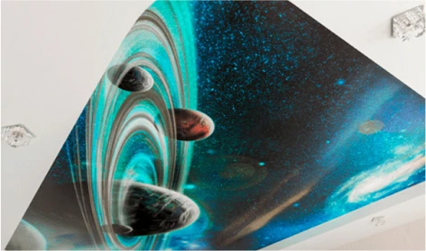

<div class="ceiling_advantages">
	<div class="wrapper">
		<h2 class="title">Преимущества матовых натяжных потолков</h2>
		<div class="body">
			<div class="top">
				<div class="left">
					<div class="squares">
						<div class="square">
							
							<p class="headline">Нет бликов</p>
							<p class="text">Фактура не отражает свет и не бликует </p>
						</div>
						<div class="square">
							
							<p class="headline">Конструкции</p>
							<p class="text">Возможна сборка любых потолочных конструкций</p>
						</div>
					</div>
					<div class="album">
						
						<p class="headline">Противопожарное полотно</p>
						<p class="text">Среди матовых полотен существует полотно с высоким классом пожаробезопасности KM2 и безопасным составом</p>
					</div>
				</div>
				<div class="middle">
					
					<p class="headline">Решение №1</p>
					<p class="text">Матовые полотна используют в дизайн-проектах профессионалы, выбирая бесщелевую или теневую технологию монтажа</p>
				</div>
				<div class="right">
					
					<p class="headline">Похож на ГКЛ</p>
					<p class="text">Фактура матового потолка похожа на гипсокартон</p>
				</div>
			</div>
			<div class="bottom">
				<div class="left">
					
					<p class="headline">Современная светотехника </p>
					<p class="text">Трековые системы, ниши для светильников, световые линии - любое современное световое решение будет сочетаться с матовым потолком</p>
				</div>
				<div class="right">
					<div class="album">
						
						<p class="headline">Качественная фотопечать</p>
						<p class="text">На матовые потолки легко наносятся любые изображения, подходящие под дизайн вашего помещения</p>
					</div>
					<div class="squares">
						<div class="square">
							
							<p class="headline">Цветные потолки</p>
							<p class="text">Есть огромный выбор цветных решений в матовых полотнах</p>
						</div>
						<div class="square">
							
							<p class="headline">Устойчивы к воде</p>
							<p class="text">При затоплении потолок выдержит до 100л на 1м2</p>
						</div>
					</div>
				</div>
			</div>
		</div>
	</div>
</div>